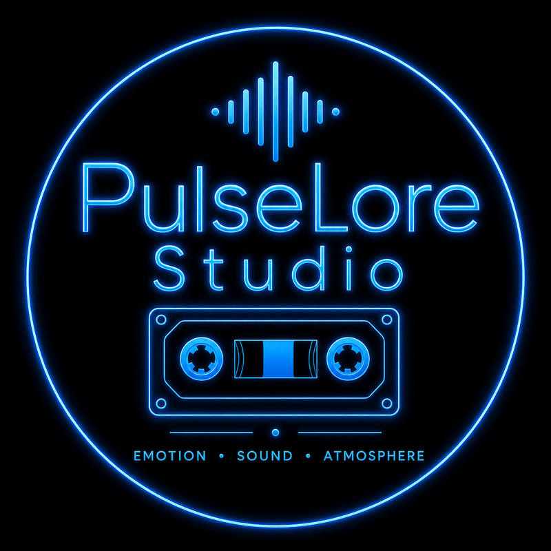
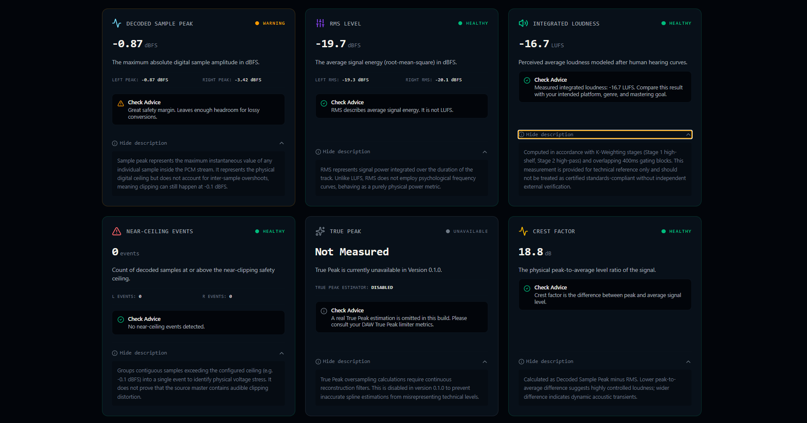
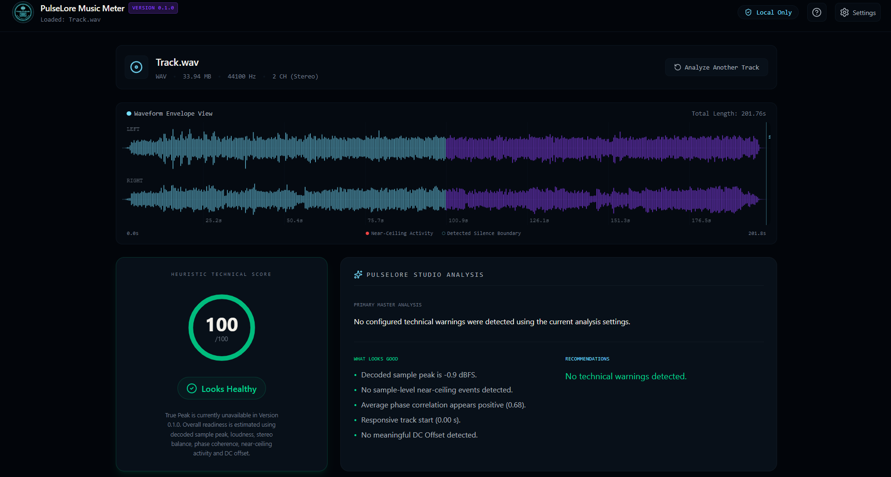
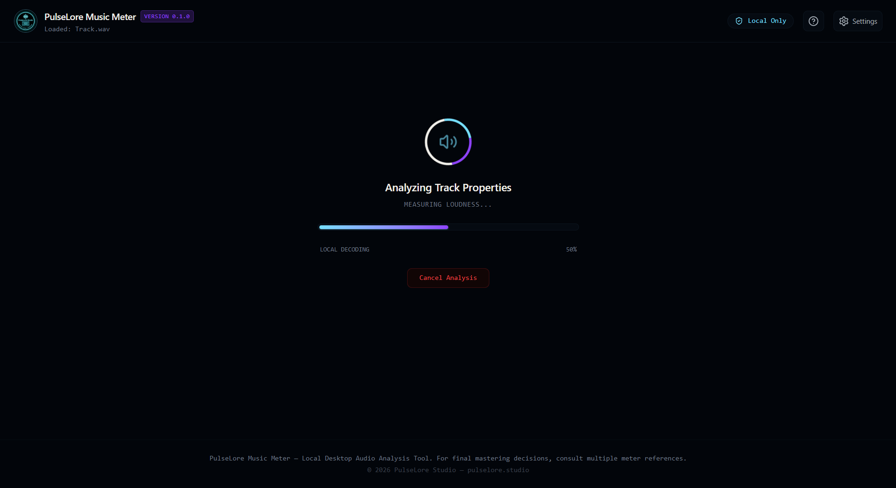

PulseLore Studio / Music Meter
Music Meter
A local desktop audio analysis tool for musicians, producers and independent creators. Clear technical readings, kept on your machine.
Download on MuseHubReal product. Real readings.
Real desktop analysis. Clear technical readings.
Music Meter runs locally. These are real views from the desktop application, not browser simulations or simulated meter data.



What it measures
Measured, not guessed.
Focused technical information for WAV, MP3 and FLAC files. Music Meter supports better listening and mastering decisions; it does not replace them.
- Decoded sample peak
- RMS level
- Integrated loudness
- Stereo balance
- Phase correlation
- Near-ceiling events
- Silence boundaries
- DC offset
- Crest factor
From PulseLore Studio
Tools with a signal behind them.
Music Meter is part of the broader PulseLore Studio tool ecosystem for artists, producers and independent creators.

Distribution
Find Music Meter on MuseHub.
PulseLore Music Meter is distributed through MuseHub. Use the product page for the current download destination.